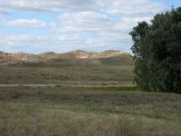
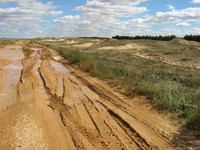
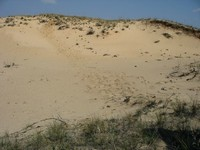
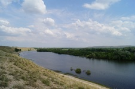
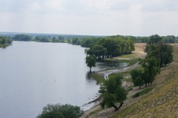
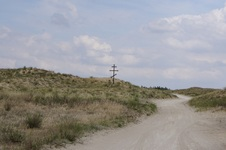

Государственный ботанический памятник природы Арчединско-Донские пески, расположенный на территории Серафимовичского и
Фроловского районов, место уникальное в своем роде. Именно здесь пролегала граница последнего обледенения.
Таявшие ледники и намыли эти горы песка. Арчединско-Донские пески представляют собой маленький кусочек пустыни
(а не полупустыни, как принято считать), площадью около 200 тысяч гектаров.
Посетить такую уникальную природную достопримечательность на территории Волгоградской области можно путешествуя по трассе М6 Каспий (Волгоград-Москва).

Арчединско-Донские пески
Описание
Происхождение
Арчединско-Донской песчаный массив – один из наиболее крупных в Волгоградской области,
расположен во впадине между реками Дон, Медведица и Арчеда.
Тянутся пески от реки Медведица на юг, плавно переходя в пустыню, упираясь в донское займище (пойменный лес).
С запада ограничиваются рекой Дон, с востока – автомобильной трассой М6 Москва-Волгоград.
Это, пожалуй, самая северная пустыня в мире из известных песчаных пустынь.
По происхождению этот песчаный ландшафт, как и другие песчаные массивы Среднего Дона,
представляют собой речные отложения древнего Дона и его притоков. Некоторые участки его сложены песками, которые оставил
донской язык крупного доисторического ледника.
Здесь встречаются песчаные бугры высотой до 10-11 метров, чаще же – 3-7 метров.
Склоны песчаных холмов покрыты куртинами казацкого можжевельника и разнообразной степной растительности.
Котловины между холмами заняты влаголюбивыми сообществами — дубравами, а наиболее глубокие западины —
берёзово-осиновыми «колками» или рощами черной ольхи. Изредка попадается яблоня, вишня, черемуха.
Грунтовые воды залегают здесь на глубине чуть более метра.
На дне некоторых, наиболее глубоких котловин наблюдается даже заболачивание.
Все это в совокупности создает большую пестроту почвенно-растительного покрова – от болот до ковыльной степи.
Фотографии
     
Расположение
 )
)
Расположение Арчединско-Донских песков на интерактивной карте
Арчединско-Донские пески находится в Фроловском районе Волгоградской области.
Заповедник занимает огромную площадь, осмотр которой может занять немало времени.
Поэтому для туристов, путешествующих по Волгоградской области, я рекомендую посетить живописное озеро Духовское
(или Летовное, расположенное рядом). С одной стороны от озер пустынный пейзаж, с другой стороны – пойменный донской лес.
Чтобы попасть на территорию Арчадинско-Донских песков Вам необходимо доехать до путепровода с развилкой на Фролово,
на котором повернуть в сторону Дона, и вот Вы уже едите по территории заповедника.
Как доехать до озер - показано на карте, если не сворачивать с дороги в сторону озер,
то Вы доедите до реки Дон, где можно искупаться и отдохнуть после долгой дороги.
Также на берегу Дона расположено множество турбаз, где можно задержаться подольше.
Дополнительная информация
Всякий, кто захочет посетить эти места, должен помнить об уникальности данного ландшафта.
Не забывайте, что Вы находитесь на территории заповедника!
Какая-либо охота здесь запрещена!
Костры разжигать запрещено!
За нарушение правил посещения взимается штраф.